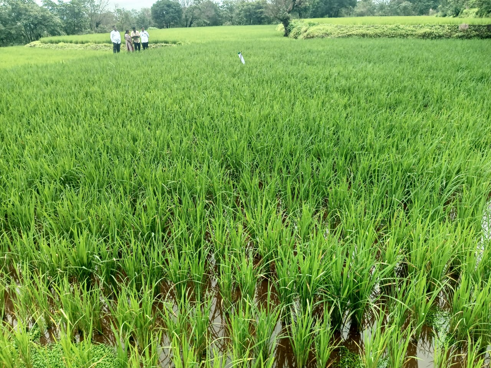
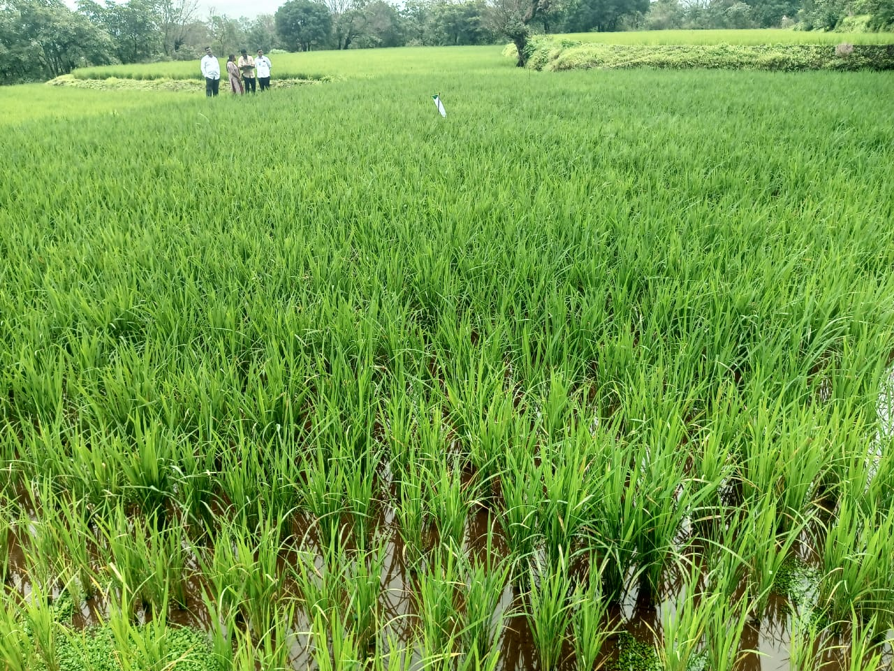

गावाचा परिचय (Village Overview)
माले हे मुळशी तालुक्यातील एक निसर्गरम्य व कृषीप्रधान गाव आहे. येथे लोकसंख्या १६८७ आहे. मुख्य व्यवसाय शेती आहे. गावात शाळा, दवाखाने व विविध सुविधा उपलब्ध आहेत.
महत्वाच्या आकडेवारी (Key Facts)
- लोकसंख्या: १६८७ (पुरुष: ८७१, महिला: ८१६)
- कुटुंबे: ३५८
- मुख्य व्यवसाय: शेती
- अंगणवाडी: २
महत्वाच्या संपर्क (Important Contacts)
- सरपंच: श्री. सुहास रामचंद्र शेंडे — ९८८१८७८८५५
- उपसरपंच: सौ. रंजना अ. जाधव — ९७६७३१३५३५
- ग्रामपंचायत अधिकारी: श्री. विजय कुदळे — ९६२३२५०९८४


 
